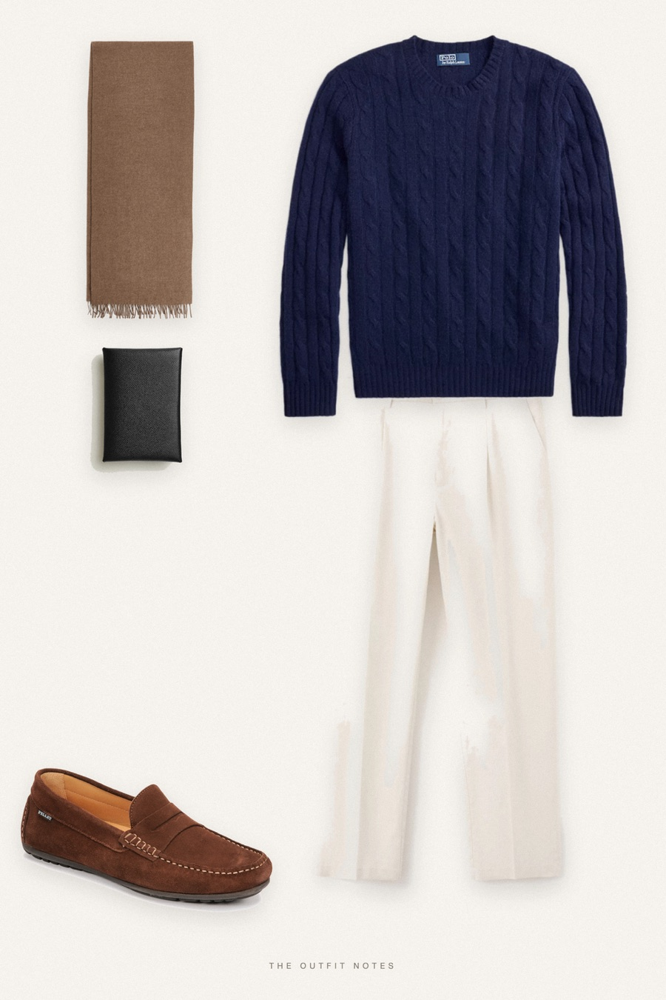
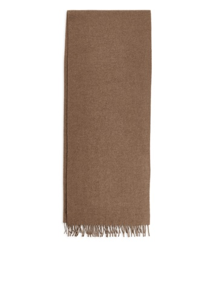
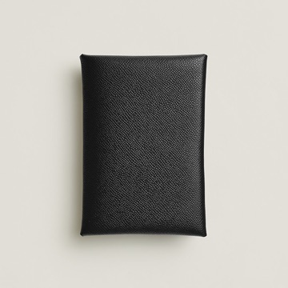

Gift Of Navy
the sweater he will keep for years

Gift ideas for him that actually get worn: the Polo Ralph Lauren iconic cable-knit cashmere sweater in navy, light pleated Mango trousers, cocoa suede loafers, a camel ARKET wool scarf and a Hermès card holder. Old money Christmas outfit for men who like classic pieces done right.
The pieces
This page contains affiliate links: if you buy through them, we may earn a commission at no extra cost to you. Disclosure.
 Polo Ralph Lauren
Polo Ralph Lauren
Navy cable-knit cashmere sweater
Shop Mango
Mango
Cream pleated fluid trousers
Shop Pellet
Pellet
Cocoa suede loafers
Shop
ARKET
Camel wool scarf
Shop
Hermès
Black leather cardholder
Shop
Prices are indicative, taken when the look was published, and may have changed. Pictures of the outfit are AI-generated illustrations of real products; the product photos are the retailers' own.
Published 1 October 2026.